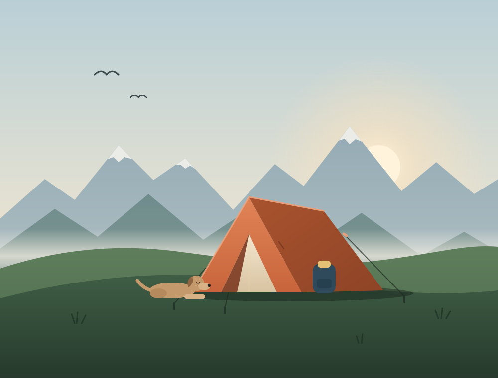

Up in three minutes
One hub pole, colour-coded clips, and a fly that pitches first when it's pouring.
Tents / Backpacking / Tern 2

€489
A freestanding two-person tent that weighs less than a bag of flour, pitches in three minutes, and shrugs off a night of sideways rain.
Free returns for 60 days · Ships in 1–2 days
One hub pole, colour-coded clips, and a fly that pitches first when it's pouring.
A 3000 mm fly, taped seams and six guy-out points keep it quiet in the wind.
Packs to the size of a water bottle, and splits in two when you share the load.
4.8 out of 5 from 212 reviews
★★★★★
Took it along the Kungsleden for eleven nights. Two nights of proper wind above the tree line and it never flapped once I'd used all the guylines.
★★★★★
My partner, me and a border collie. Snug but fine: the dog sleeps across our feet and the packs live in the vestibules.
★★★★☆
Lightest two-person tent I've owned that doesn't feel fragile. Wish the stuff sack were a little bigger when the fly is wet.
★★★★★
Pitched it in the dark in the rain, fly first, in about four minutes. The colour-coded clips make it idiot-proof. Ask me how I know.
How it works · Stand Inline
Right before buying, most shoppers have exactly one question left. Here it gets asked in a box that looks like part of the product page, and answered right under the price. When the shopper scrolls on to the specs and reviews, the conversation follows them as a small dock.
site="demo", Stand Chat's shared demo site. Its demo Stand-in reads the page's private prompt, but it may still decline to speak for a made-up shop. With your own Site ID, your own Stand-ins answer, trained on your website.<script type="module" src="stand-inline.js"></script>
<stand-inline
site="YOUR-SITE-ID"
look="field"
grow="follow"
placeholder="Ask anything about the Tern 2"
suggestions="Will two people and a dog fit? | How does it handle wind? | Is it OK for winter?"
prompt="The visitor is on the product page of the Tern 2: 1.28 kg, floor 218 × 132 cm, rated to about 60 km/h wind…"
analytics-id="tern-2-product">
</stand-inline>look="field" starts as a box that reads like search: familiar, and quiet enough to sit under a buy button.grow="follow" unfolds the conversation in place, then docks it to the bottom of the screen while it's out of view.suggestions are the questions your reviews and returns already tell you people have. Separate them with |.prompt is private context for whoever answers: specs, prices and advice rules. Visitors don't see it, but it's in your HTML, so keep it to public facts.It takes its font and text color from the page. Northfold sets three tokens and styles two parts:
stand-inline {
--si-accent: #C8643B;
--si-radius: 6px;
--si-surface: #FFFDF8;
}
stand-inline::part(send) { border-radius: 4px; }
stand-inline::part(suggestion) { border-radius: 4px; }npx degit standchat/examples/stand-inline my-stand-inline